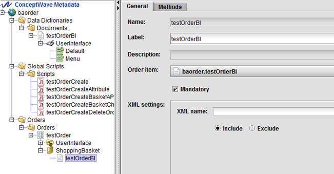

|
In the past, the catalog basket was not integrated in an order. Instead, you had to link the basket by using the basket ID within the order's order instance. The basket is part of CwfDataOrder, which eliminates the linking process.
Metadata Preparation
To prepare your metadata, complete these steps in Velocity Studio as shown in the following example:
- Create a Data Document. This example shows a dynamic document that extends the CwcBasketItem document.
- The following two fields are required to use this document in order collections:
- System Order ID
- System Parent ID
- Create an order.
- Create a collection, ShoppingBasket, under the testOrder that you have just created. The Mandatory field must be checked to get the basket created.
- Create a document under the ShoppingBasket collection. The Order items field will point to the dynamic document that was created in step 1.

Scripting Usage
The scripting usage for a basket in an order is as follows:
- Create an order and add a basket item
The ShoppingBasket is an instance of CwcBasket, which is automatically created when the order is initialized.
- Read the order and basket
If the basket is inside an order, use Order.read() to read the basket. It is recommended that you do not use Basket.readFromDB(), as the basket is part of the order.
- Delete the order and basket
If the basket is inside an order, use Order.deleteOrder() to delete both order and basket. It is recommended that you do not use Basket.deleteFromDB(), as the basket is part of the order.
- Copy the order and basket
If the basket is inside an order, use order.copyOrder(true, true). The second parameter in this method can be used to control whether to save an order. It is recommended that you do not use Basket.createCopy() when a basket is inside an order.
|